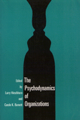

<body bgcolor="#FFFFFF" text="#000000" link="#0000FF" vlink="#CC0000" alink="#CC0000"><center><hr width="350" size="1" align="center" noshade>An exploration of psychological issues that arise in modern corporations<hr width="350" size="1" align="center" noshade><p><a href="https://cdcshoppingcart.uchicago.edu/Cart/ChicagoBook.aspx?ISBN=9781566390200&&PRESS=temple" target="_top">Buy this book!</a> | <a href="https://cdcshoppingcart.uchicago.edu/Cart/Cart.aspx?PRESS=temple" target="_top">View Cart</a> | <a href="https://cdcshoppingcart.uchicago.edu/Cart/Cart.aspx?PRESS=temple" target="_top">Check Out</a></p><p></p></center><!--none//--><h1>The Psychodynamics of Organizations</h1>
<h3>edited by Larry Hirschhorn and Carole K. Barnett</h3>
<P>cloth 1-56639-020-6 $78.50, Mar 93, <FONT COLOR=#990033>Out of Stock Unavailable</FONT>
<br>paper 1-56639-021-4 $38.95, Mar 93, <FONT COLOR=#990033>Available</FONT>
<BR> 288 pp
6x9
6&nbsp;tables 1&nbsp;figure
</P><p>The changing character of organizational life in the post-industrial world has caused organizational psychoanalysis to reemerge as a vital discipline. Modern technologies and the global economy continue to create new sources of anxiety and risk. In this volume, fifteen essays demonstrate how social irrationality shapes organizational life. The contributors focus on problems in productivity and morale; issues of anger and aggression as well as hope and mutuality in organizations; and troubling changes associated with growth or cutbacks. Richly drawn case studies (of a law firm, a factory, an oil refinery, a coal mine, among others) are framed by more theoretical discussion.
<BR>&nbsp;<h2>Contents</h2><P>
<p>Acknowledgments
<br>Introduction
<p><b>Part I: The Person and the Organization</b>
<br>1. The Managerial Couple: Superior-Subordinate Relationships as a Unit of Analysis &#150 James Krantz
<br>2. Mourning, Potency, and Power in Management &#150 Laurent Lapierre
<br>3. Organizational Politics Against Organizational Culture: A Psychoanalytic Perspective &#150 Howell S. Baum
<br>4. Contemporary Perspectives on Personal and Organization Authority: The Self in a System of Work Relationships &#150 Laurence J. Gould
<p><b>Part II: Case Studies</b>
<br>5. Professionals, Authority, and Group Life: A Case Study of a Law Firm &#150 Larry Hirschhorn
<br>6. How Organizational Culture Can Affect Innovation &#150 Steven P. Feldman
<br>7. Group Self-Esteem and Group Performance &#150 Glenn Swogger, Jr.
<br>8. The Psychodynamics of a Cultural Change: Learnings from a Factory &#150 Larry Hirschhorn and Thomas N. Gilmore
<br>9. The Psychodynamics of Safety: A Case Study of an Oil Refinery &#150 Larry Hirschhorn and Donald R. Young
<br>10. The Assumptions of Ordinariness as a Denial Mechanism: Innovation and Conflict in a Coal Mine &#150 Eric L. Trist
<p><b>Part III: Culture, Politics, and Race: Organizational Psychodynamics in Context</b>
<br>11. The Mythological Structure of Organizations and Its Impact &#150 Abraham Zaleznik
<br>12. Mentoring and Irrationality: The Role of Racial Taboos &#150 David A. Thomas
<br>13. Alexithymia in Organizational Life: The Organization Man Revisited &#150 Manfred F.R. Kets de Vries
<br>14. Bureaucracy as Externalized Self-System: A View from the Psychological Interior &#150 Michael A. Diamond
<br>15. On the Psychodynamics of Organizational Totalitarianism &#150 Howard S. Schwartz
<p>About the Contributors
<br>Index
</P><BR>&nbsp;<H2>About the Author(s)</H2>
<P><b>Larry Hirschhorn</b> is Principal of the Center for Applied Research, Inc., a faculty member at the William Alanson White Institute's Program on Organizational Development and Consultation, and the author of several books, including <I>The Workplace Within</I>.</P>
<P><b>Carole K. Barnett</b> is a Ph.D. candidate in the Organizational Psychology Program at the University of Michigan and co-editor of <I>Globalizing Management: Creating and Leading the Competitive Organization</I>.</P>
<P>Contributors: Howell S. Baum, Michael A. Diamond, Steven P. Feldman, Thomas N. Gilmore, Laurence J. Gould, Manfred F.R. Kets de Vries, James Krantz, Laurent Lapierre, Howard S. Schwartz, Glenn Swogger, Jr., David A. Thomas, Eric L. Trist, Donald R. Young, Abraham Zaleznik, and the editors.</P>
<BR><H2>Subject Categories</H2>
<p><A HREF="/tempress/labor.html" TARGET="_top">Labor Studies and Work</a>
<BR><A HREF="/tempress/psycho.html" TARGET="_top">Psychology</a>
</p>
<BR><h2 class="inpageheading">In the series</H2>
<P><I><a href="http://www.temple.edu/tempress/labor_change.html" onMouseOver="window.status='Click for other books in this series!'; return true;" onMouseOut="window.status=''; return true;" target="_top">Labor and Social Change</a></i>, edited by Paula Rayman and Carmen Sirianni.
</p><p><i>Labor and Social Change</i>, edited by Paula Rayman and Carmen Sirianni, includes books on workplace issues like worker participation, quality of work life, shorter hours, technological change, and productivity, as well as union and community organizing and ethnographies of particular occupations.</p>
<p align="center"><a href="https://cdcshoppingcart.uchicago.edu/Cart/ChicagoBook.aspx?ISBN=9781566390200&&PRESS=temple" target="_top">Buy this book!</a> | <a href="https://cdcshoppingcart.uchicago.edu/Cart/Cart.aspx?PRESS=temple" target="_top">View Cart</a> | <a href="https://cdcshoppingcart.uchicago.edu/Cart/Cart.aspx?PRESS=temple" target="_top">Check Out</a></p><p><font face="Arial" size="1"><a href="copyright.html" onMouseOver="window.status='Web Copyright Policy';return true;" onMouseOut="window.status=''" title="Web Copyright Policy">&copy;</a> 2015 <a href="http://www.temple.edu" target="new" onMouseOver="window.status='Link to Temple University home page';return true;" onMouseOut="window.status=''" title="Link to Temple University home page">Temple University</a>. All Rights Reserved. http://www.temple.edu/tempress/titles/859_reg.html</font></p>